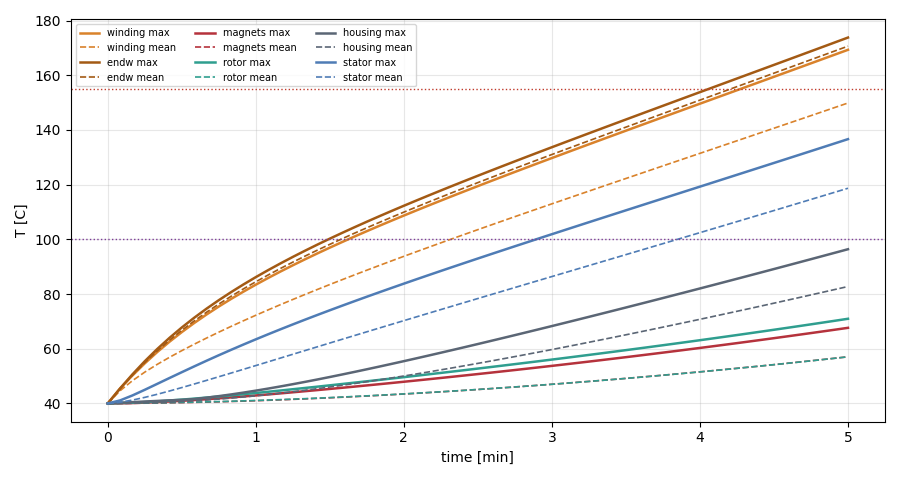
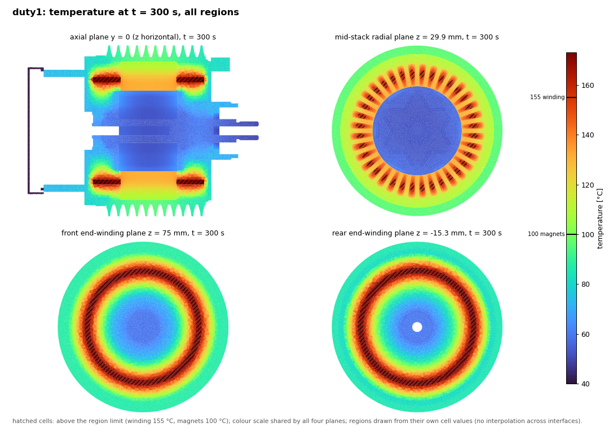
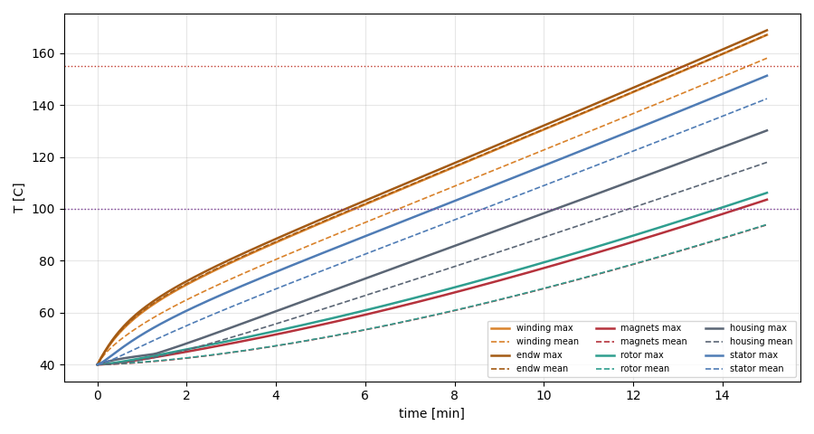
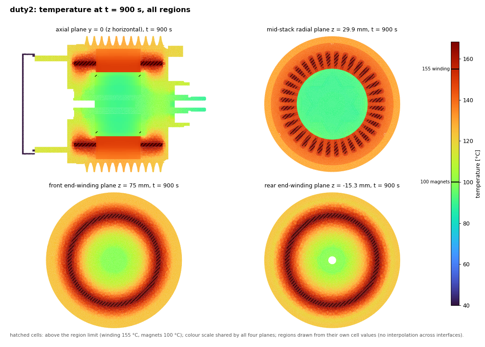
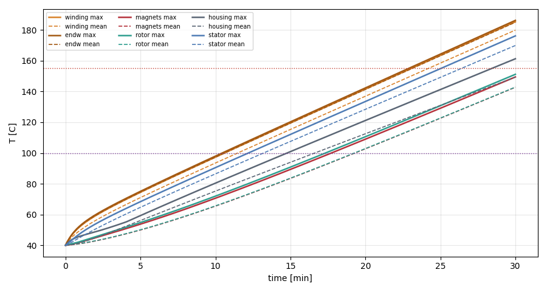
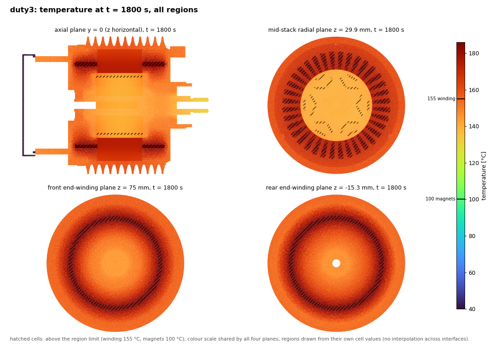
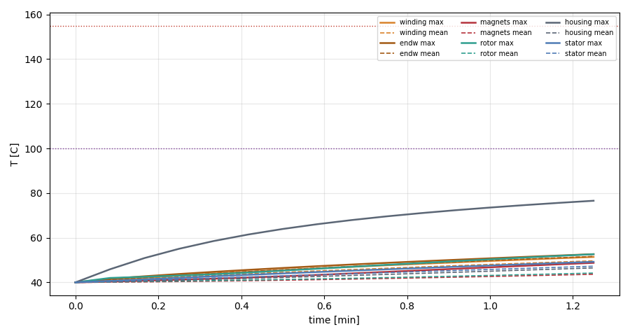
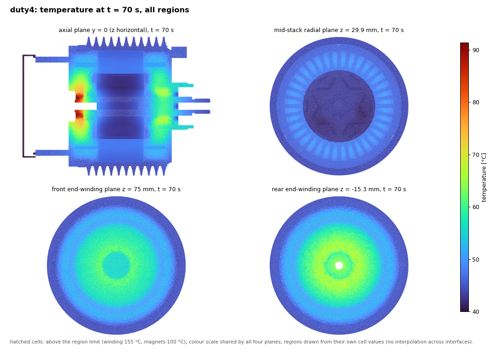
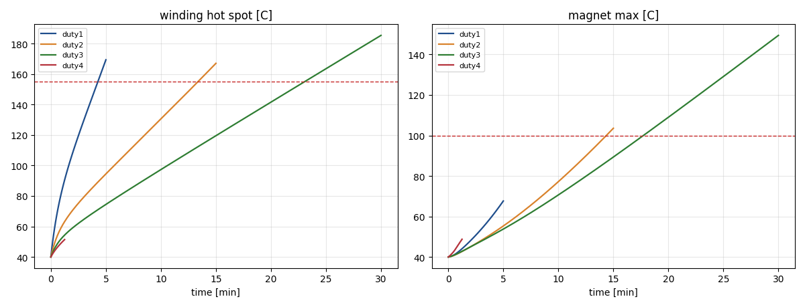

Results
Per-duty temperature histories, contours, animations and peak tables; filled as the runs finish.
duty1 duty2 duty3 duty4 duty5Limits: winding 155 C, magnets 100 C. Cases are read from \\wsl.localhost\Ubuntu-24.04\home\cfd\cfd. The radial planes of duty1-3 were empty in the run (plane point given in mm on a metre mesh); they are re-cut from the saved T fields (every 30 s) by scripts/u666_slicefix.sh. Duty4/5 write them every 10 s.
duty1: 1782 rpm, 37.33 Nm, 1201 W, target 5 min

| Region | peak max T [C] | at [min] | mean T at end | limit [C] | margin [K] | time to limit |
|---|---|---|---|---|---|---|
| winding | 169.3 | 5.0 | 149.9 | 155 | -14.3 | 4.3 min |
| endw | 173.8 | 5.0 | 170.7 | 155 | -18.8 | 4.1 min |
| magnets | 67.6 | 5.0 | 57.1 | 100 | +32.4 | not reached |
| rotor | 71.0 | 5.0 | 57.0 | |||
| housing | 96.4 | 5.0 | 82.8 | |||
| stator | 136.7 | 5.0 | 118.7 |

Pending: 3D animation skipped: it needs every saved full field reconstructed (1.4 M cells x 10 regions) and a 3D renderer, too heavy while OpenFOAM uses all cores.
Observations
- Winding hot spot reaches 169.3 °C at 300 s; the 155 °C limit is crossed at 256 s (4.3 min).
- Magnets peak at 67.6 °C, below the 100 °C limit.
- End winding peaks 173.8 °C vs slot 169.3 °C (+4.5 K): the end winding is the hot spot.
- Housing reaches 96.4 °C.
- Energy check: injected minus stored minus ambient outflow = +0.6 % of injected (copper-loss temperature feedback taken from the mean winding temperature).
duty2: 2550 rpm, 26.66 Nm, 651.3 W, target 15 min

| Region | peak max T [C] | at [min] | mean T at end | limit [C] | margin [K] | time to limit |
|---|---|---|---|---|---|---|
| winding | 167.0 | 15.0 | 158.0 | 155 | -12.0 | 13.4 min |
| endw | 168.8 | 15.0 | 167.1 | 155 | -13.8 | 13.1 min |
| magnets | 103.6 | 15.0 | 93.9 | 100 | -3.6 | 14.4 min |
| rotor | 106.2 | 15.0 | 94.0 | |||
| housing | 130.2 | 15.0 | 117.9 | |||
| stator | 151.3 | 15.0 | 142.4 |

Pending: 3D animation skipped: it needs every saved full field reconstructed (1.4 M cells x 10 regions) and a 3D renderer, too heavy while OpenFOAM uses all cores.
Observations
- Winding hot spot reaches 167.0 °C at 900 s; the 155 °C limit is crossed at 802 s (13.4 min).
- Magnets peak at 103.6 °C; the 100 °C limit is crossed at 862 s.
- End winding peaks 168.8 °C vs slot 167.0 °C (+1.8 K): the end winding is the hot spot.
- Housing reaches 130.2 °C.
- Energy check: injected minus stored minus ambient outflow = +0.9 % of injected (copper-loss temperature feedback taken from the mean winding temperature).
duty3: 3637 rpm, 20.4 Nm, 486.7 W, target 30 min

| Region | peak max T [C] | at [min] | mean T at end | limit [C] | margin [K] | time to limit |
|---|---|---|---|---|---|---|
| winding | 185.3 | 30.0 | 179.9 | 155 | -30.3 | 23.1 min |
| endw | 186.2 | 30.0 | 185.0 | 155 | -31.2 | 22.9 min |
| magnets | 149.4 | 30.0 | 142.7 | 100 | -49.4 | 17.7 min |
| rotor | 151.1 | 30.0 | 142.9 | |||
| housing | 161.3 | 30.0 | 149.3 | |||
| stator | 176.1 | 30.0 | 169.9 |

Pending: 3D animation skipped: it needs every saved full field reconstructed (1.4 M cells x 10 regions) and a 3D renderer, too heavy while OpenFOAM uses all cores.
Observations
- Winding hot spot reaches 185.3 °C at 1800 s; the 155 °C limit is crossed at 1384 s (23.1 min).
- Magnets peak at 149.4 °C; the 100 °C limit is crossed at 1064 s.
- End winding peaks 186.2 °C vs slot 185.3 °C (+0.9 K): the end winding is the hot spot.
- Housing reaches 161.3 °C.
- Energy check: injected minus stored minus ambient outflow = +1.5 % of injected (copper-loss temperature feedback taken from the mean winding temperature).
duty4: 9339 rpm, 3.807 Nm, 716.4 W, target 45 min

| Region | peak max T [C] | at [min] | mean T at end | limit [C] | margin [K] | time to limit |
|---|---|---|---|---|---|---|
| winding | 51.4 | 1.2 | 49.7 | 155 | +103.6 | not reached |
| endw | 52.6 | 1.2 | 51.6 | 155 | +102.4 | not reached |
| magnets | 48.7 | 1.2 | 43.6 | 100 | +51.3 | not reached |
| rotor | 52.6 | 1.2 | 44.2 | |||
| housing | 76.6 | 1.2 | 46.5 | |||
| stator | 49.2 | 1.2 | 47.2 |

Pending: 3D animation skipped: it needs every saved full field reconstructed (1.4 M cells x 10 regions) and a 3D renderer, too heavy while OpenFOAM uses all cores.
Observations
- Winding hot spot reaches 51.4 °C at 75 s; the 155 °C limit is not reached.
- Magnets peak at 48.7 °C, below the 100 °C limit.
- End winding peaks 52.6 °C vs slot 51.4 °C (+1.2 K): the end winding is the hot spot.
- Housing only reaches 76.6 °C: heat is mostly stored in the motor at this duration (see budget animation).
- Energy check: injected minus stored minus ambient outflow = +4.5 % of injected (copper-loss temperature feedback taken from the mean winding temperature).
duty5: 1612 rpm, 12.68 Nm, 174.8 W, target 45 min
Pending: duty5: no postProcessing in \\wsl.localhost\Ubuntu-24.04\home\cfd\cfd\u666_duty5 yet (run not started or not finished)
Compare all
| duty | winding peak | endw peak | magnets peak | rotor | housing | first limit |
|---|---|---|---|---|---|---|
| duty1 | 169.3 | 173.8 | 67.6 | 71.0 | 96.4 | winding 4.3 min; endw 4.1 min |
| duty2 | 167.0 | 168.8 | 103.6 | 106.2 | 130.2 | winding 13.4 min; endw 13.1 min; magnets 14.4 min |
| duty3 | 185.3 | 186.2 | 149.4 | 151.1 | 161.3 | winding 23.1 min; endw 22.9 min; magnets 17.7 min |
| duty4 | 51.4 | 52.6 | 48.7 | 52.6 | 76.6 | none |

Generated 2026-10-24 14:35 by scripts/u666_site.py from results/u666/steps_log.md and the case data.